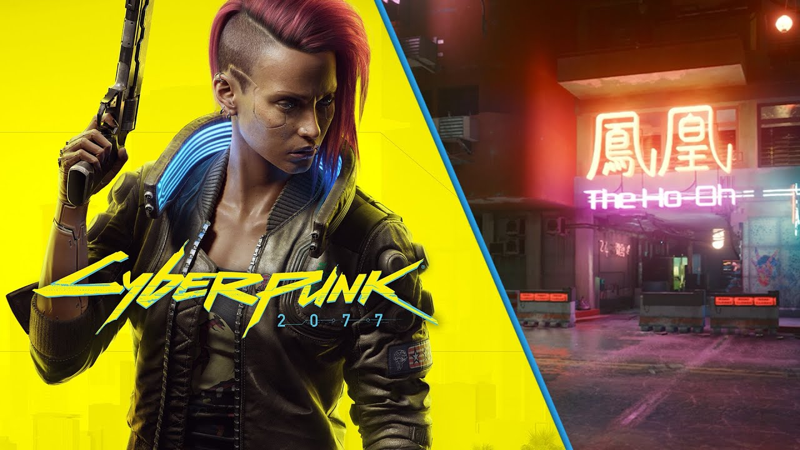

Cyberpunk finalmente chega aos dispositivos de jogadores em todo o mundo, oferecendo uma experiência imersiva e visceral de RPG ambientada em um futuro distópico de alta tecnologia. Desenvolvido pela renomada produtora de jogos, CD Projekt Red, o jogo promete uma viagem alucinante por uma cidade cibernética repleta de intriga, crime, glamour e perigos inimagináveis.
Inovação Tecnológica em Mundo Aberto: O jogo se passa na cidade de Night City, uma vasta metrópole onde a tecnologia avançada convive com a desigualdade social e o caos urbano. Os jogadores são colocados no papel de um "V", um protagonista customizável cujas escolhas moldam a narrativa. Com uma liberdade sem precedentes, os jogadores podem explorar essa cidade exuberante, alternando entre missões de enredo envolventes e atividades paralelas, desde caçar criminosos até hackear sistemas corporativos. Implantes Cibernéticos e Personalização: Uma das características marcantes do jogo é a capacidade de os jogadores equiparem "implantes cibernéticos", que variam de melhorias físicas a habilidades especiais, permitindo uma personalização profunda do estilo de jogo. Desde braços biônicos armados até habilidades de hacking de alta octanagem, as escolhas dos jogadores influenciam diretamente suas abordagens táticas e os desafios que enfrentam.
História Ramificada e Personagens Complexos: O coração do jogo é a narrativa intrincada, repleta de personagens memoráveis e motivações obscuras. Cada decisão tomada por "V" afeta a direção da história, levando a múltiplos finais possíveis. Alianças podem ser formadas, traições podem ocorrer, e o destino da cidade está nas mãos do jogador.
Polêmicas e Desafios de Desenvolvimento: Apesar das altas expectativas, Cyberpunk não esteve isento de controvérsias. O jogo enfrentou vários adiamentos em seu processo de desenvolvimento, levantando preocupações sobre a qualidade do produto final. Após o lançamento, alguns jogadores encontraram bugs e problemas técnicos que afetaram a experiência de jogo, levando a CD Projekt Red a emitir atualizações de correção.
Conclusão: Com um mundo aberto deslumbrante, uma narrativa envolvente e inúmeras possibilidades de jogo, Cyberpunk oferece uma visão ousada do futuro cibernético. Apesar dos desafios enfrentados, o jogo continua a atrair jogadores ansiosos para explorar e dominar a caótica Night City, enquanto a CD Projekt Red se empenha em aprimorar a experiência por meio de atualizações regulares. 